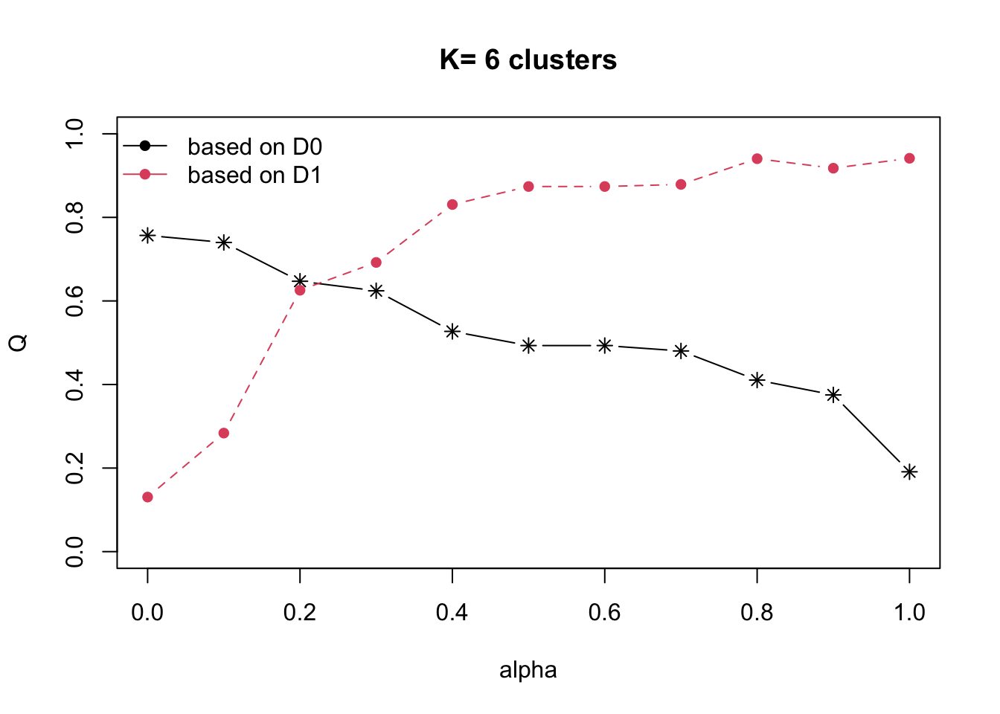

Hands On Exercise 3
Overview
In this section, we will analysis the dataset using ClustGeo method which is a soft classifier. ClustGeo method has a limitation. It only allows using the ward method for hierarchical clustering.
1. Ward Method Hierarchical Clustering with ClustGeo
First we prepare the data needed. These data has been pre-prepared from handson exer
Reading layer `myanmar_township_boundaries' from data source
`/Users/gladwinlam/R Quarto/gladwinlam/ISSS624/Inclass/Inclass3/data/geospatial'
using driver `ESRI Shapefile'
Simple feature collection with 330 features and 14 fields
Geometry type: MULTIPOLYGON
Dimension: XY
Bounding box: xmin: 92.17275 ymin: 9.671252 xmax: 101.1699 ymax: 28.54554
Geodetic CRS: WGS 84ClustGeo package has a hclustgeo() function. We use this function to perform ward-like hierarchical clustering. This is same as hclust() function and selecting method as ward. This is another option to use compared to hclust. Either which, there is no spatial constrained applied here.
Since this is a non-spatially constrained hierarchical cluster, we only need the dissimilarity, matrix. The matrix needs to be a dist() object class.
nongeo_cluster <- hclustgeo(proxmat)
plot(nongeo_cluster, cex = 0.5)
#draw colour boxes for each cluster
rect.hclust(nongeo_cluster,
k = 6,
border = 1:6)1.1 Choropleth Mapping of Clusters
We can plot the clusters onto the map. We convert the clusters values into a factor/category. nongeo_cluster builds a tree. We use cutree() to cut the tree into k number of groups then convert into factor
groups<-as.factor(cutree(nongeo_cluster, k= 6))
#add to shan_sf data table
shan_sf_nego_cluster <- cbind(shan_sf, as.matrix(groups)) %>%
rename(`CLUSTER` = `as.matrix.groups.`)qtm(shan_sf_nego_cluster, "CLUSTER")
Without considering the effects of geospatial effect, we can see the clustering is a fragmented.
1.2 Spatially Constrained Hierarchical Clustering with Clustgeo
We need a spatial distance matrix. This can be computed using st_distance() of sf package. We use as.dist() to convert dist into a matrix.
dist <- st_distance(shan_sf, shan_sf)
distmat <- as.dist(dist)We can tune the weight of spatial constraint effect on the hierarchical clustering using the choicealpha(). To visualise the impact of the choice alpha, we can plot a graph and select a choice alpha that is the best trade off between cluster attribute effect and geospatial attribute effect.
0 <= Choice alpha <= 1
Choice alpha of 0 means we consider the least geospatial attribute effect.
Choice alpha of 1 means we consider maximum effect of geospatial attribute effect.
First graph is Q and second graph is Qnorm. Q norm is normalised version of Q and used when cluster attribute is skewed.
cr <- choicealpha(proxmat, distmat, range.alpha = seq(0, 1, 0.1), K=6, graph = TRUE)

From above, we will select choice alpha 0.3. This selects 70% impact of spatial effect and 70% of clustering attribute effect.
We build the clustG model with alpha = 0.3.
clustG <- hclustgeo(proxmat, distmat, alpha = 0.3)groups <- as.factor(cutree(clustG, k=6))#add groups to sf data table
shan_sf_Gcluster <- cbind(shan_sf, as.matrix(groups)) %>%
rename(`CLUSTER` = `as.matrix.groups.`)qtm(shan_sf_Gcluster, "CLUSTER")
With spatial effect taken into account, the clustering is more cohesive.